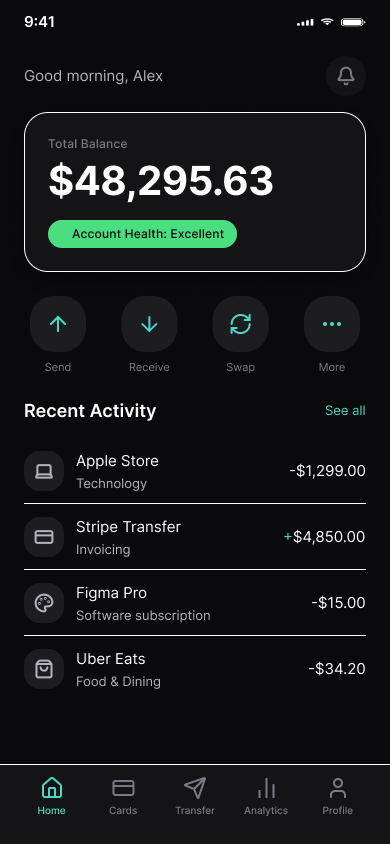
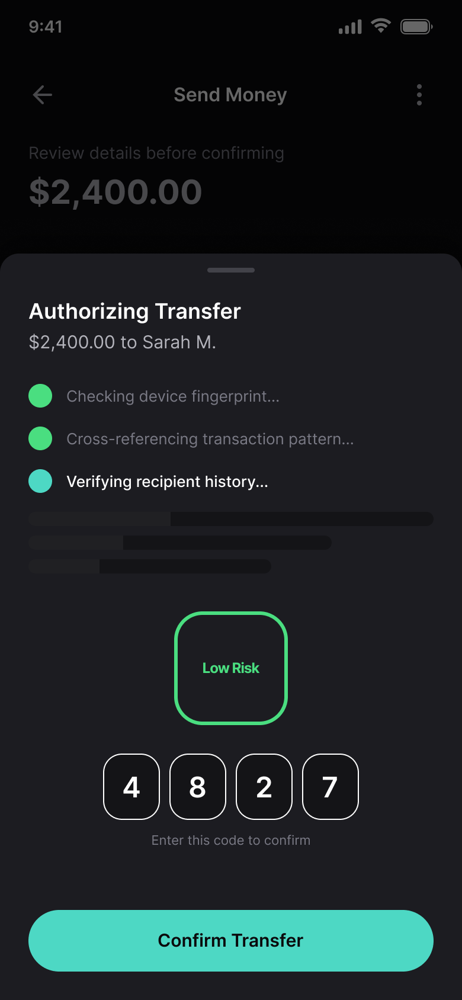
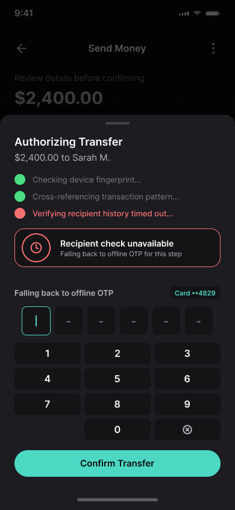

Tomaan
Reimagining Offline Security for the AI-Native Era

Reimagining Offline Security for the AI-Native Era
At Carrene, I designed the interfaces for offline one-time-password applications — Ramzbaan and Aras — securing transactions for a security-conscious banking user base at a time when offline OTP was still a genuinely novel idea in the market. Those apps have since scaled past 2 million users, and the core mechanism I helped design is still running in production today.
Tomaan is what I'd build next. It takes the same non-negotiable requirement — a transaction can never be left unverifiable — and asks what that requirement looks like once the interface itself is no longer static. Generative AI changes the terms: a security system that reasons about a transaction in real time doesn't just display a result, it produces one, live, in front of the user. That shift breaks almost every convention the original apps relied on, and this project is my attempt to design for what replaces them.
Three things are true about generative security checks that weren't true about the old deterministic flow:
They're slow relative to user expectation. An LLM-driven fraud check can take one to eight seconds. A static loading spinner over that duration reads as "broken," not "working," destroying systemic trust.
They're probabilistic. The system doesn't know a transaction is safe the way the old flow "knew" a code matched. It estimates. That estimate has to be shown clearly, not hidden behind a binary checkmark.
They can fail in a new way. The old apps had one failure mode: no connection, no code. An AI layer can time out, degrade, or — worse — return a confident wrong answer (hallucination). The interface needs an honest way to say "this part of the system isn't sure" without triggering panic or being ignored.
I designed three screens that each answer one of these challenges directly, establishing a highly secure, modern generative paradigm.
Before touching the security flow, I rebuilt the visual foundation. The original apps used standard light-mode banking chrome — white surfaces, primary blue, dense text. Tomaan moves to a near-black base (#0A0A0C, not pure black, to avoid OLED smearing) layered with frosted, blurred surfaces — thin hairline borders instead of heavy strokes, which is the current version of glassmorphism rather than the heavier 2020-era pattern.
The dashboard's job is to introduce the system's central new primitive before the user ever needs it under pressure: the confidence chip. "Account Health: Excellent," rendered in a soft green pill, sits directly under the balance. It's a low-stakes, ambient first exposure to a visual language — a colored signal tied to AI certainty — that becomes load-bearing two screens later.
One deliberate correction I made mid-process: my first pass used red/green dots for both transaction direction (money in/out) and AI confidence, and they collided. I removed color from the debit/credit indicator entirely (a plain +/− prefix does that job) and kept red/green reserved exclusively for confidence signaling to preserve internal logic.

This is the core interaction. When a transfer is initiated, the system doesn't freeze on a spinner — it shows its work. A skeleton-paired, typewriter-style sequence narrates the check as it happens: checking device fingerprint, cross-referencing transaction pattern, verifying recipient history. Completed checks resolve to a solid confidence-colored dot; the check still running gets a distinct spinning indicator, so the user can tell "done" from "in progress" at a glance rather than reading text carefully under time pressure.
The sequence resolves into a confidence score — 98%, Low Risk — rendered as a large, unmissable ring before the OTP code reveals underneath it. The ordering matters: the user sees the system's reasoning conclude before they see the number they're supposed to trust. That's the whole thesis of the redesign in one screen — legibility of AI reasoning as a prerequisite for trust, not an afterthought bolted onto a result.

Most AI-redesign concepts stop at the happy path. Tomaan's third screen is the one I think does the real work: what happens when the AI layer can't finish its job.
Here, one check — recipient history — times out. The interface doesn't declare total failure or throw an alarming error state. It scopes the problem precisely ("Recipient check unavailable") and falls back to exactly the mechanism the original Ramzbaan and Aras apps used: a manually entered, offline OTP tied to the physical card.
The visual treatment stays calm — same dark surfaces, same typography — rather than switching to red-alert styling, because a fallback to a proven legacy mechanism isn't an error. It's the system working correctly. This is also where the project closes its own loop: the "old" mechanism doesn't get replaced, it becomes the safety net.

A few open questions I'd want to resolve with real users and a security team before shipping anything like this:
A 98% confidence score is only trustworthy if the number is actually calibrated to real fraud-model output, not a UI decoration. That's a cross-functional problem, not just a design one.
Confidence indicators need to earn their visibility. If every transaction shows a badge, users stop reading them. I'd want usage data before deciding how often to surface the chip versus staying silent by default.
This version was designed for an international/USD context. The original systems were Iranian-market products; a real build would need currency, numeral, and RTL-layout decisions made deliberately, not left as an afterthought.
Note: Tomaan is a personal design exploration, not a shipped product. It builds on real work I did at Carrene designing offline OTP interfaces for Ramzbaan and Aras.